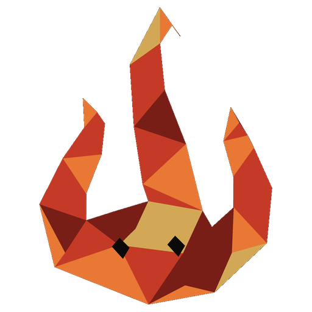

Stella Is a Wolf
Tactics / PC · In development
See this game →AIAll three are in development. We film how they get made: the prompts we give the AI, and the parts we still do by hand.
Tactics / PC · In development
See this game →
YouTube Playables · In development
See this game →
A board for building music · In development
See this game →New devlog episodes go up on YouTube on Tuesdays, Fridays and Sundays.
Watch the devlog on YouTube
Salon der Glut
Games by Haus Tacorari